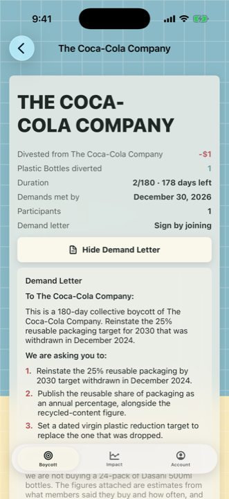
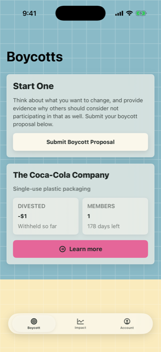

Together we change anything.
One person not buying something is a preference. Fifty thousand people not buying the same thing, and saying so out loud, is a number a company has to answer for.
Ask for a beta inviteLoxley is in testing on iPhone and is not on the App Store yet.


There is probably already something you have stopped buying. This is where you say what it is and find the people who agree.
Propose a boycott, a moderator reads it, and it runs. Joining is the whole commitment. There is no pledge drive and nothing to vote on.
You pick the company out of a register of large companies and the issue out of a fixed list, then write what the company has to do and by when. Naming a company from a register rather than typing it is what lets everyone proposing the same thing end up in one campaign instead of four hundred near-duplicates.
A moderator reads it before anyone else sees what you wrote. Then it runs for at least ninety days, because what makes pressure transmit is outlasting a retail buying review, not one soft month.
Direct lost sales from consumer boycotts are almost always negligible against company revenue. That is not a Loxley problem, it is the historical record. The boycotts that changed corporate behaviour did it through attention and reputation, with the withheld spending as the organising device rather than the weapon.
So Loxley does not shrink the number until it looks impressive. Every figure is computed from stated assumptions, the percentage of a whole company sits next to the friendlier percentage of a single brand line, and where a figure does not exist the app says it does not know rather than filling the gap.
Browsing needs no account at all. Joining or proposing needs Sign in with Apple, because a boycott is only worth anything if the number of people in it is real.
Apple is asked for nothing: no name, no email address, not even a private relay address. What Loxley receives is an opaque identifier Apple creates for this app alone, which cannot be matched to you in any other app. What is attached to it is what you did here, and you can delete all of it, and the identifier, from inside the app.
That is the whole idea. Bring the people who already agree with you.
Ask for a beta invite